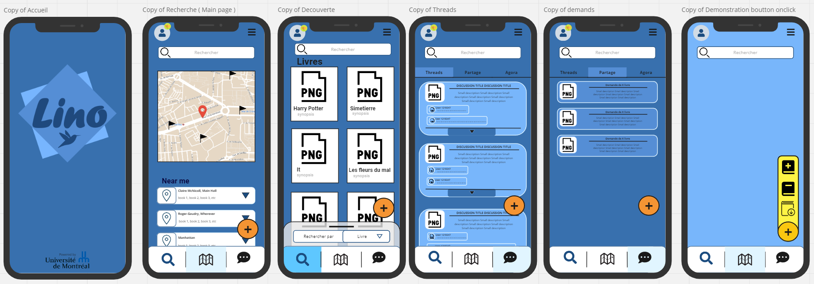
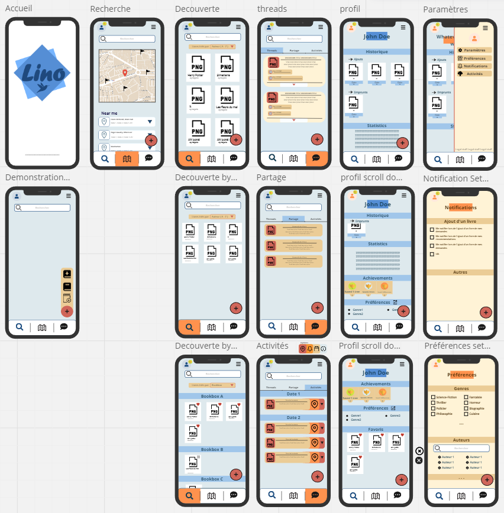
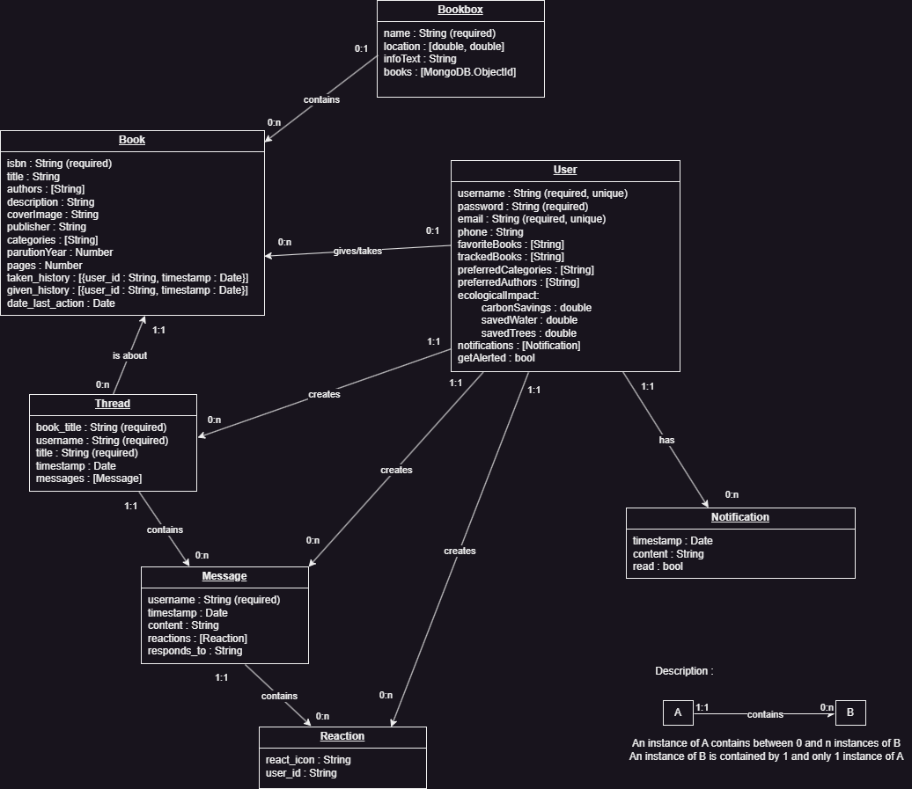
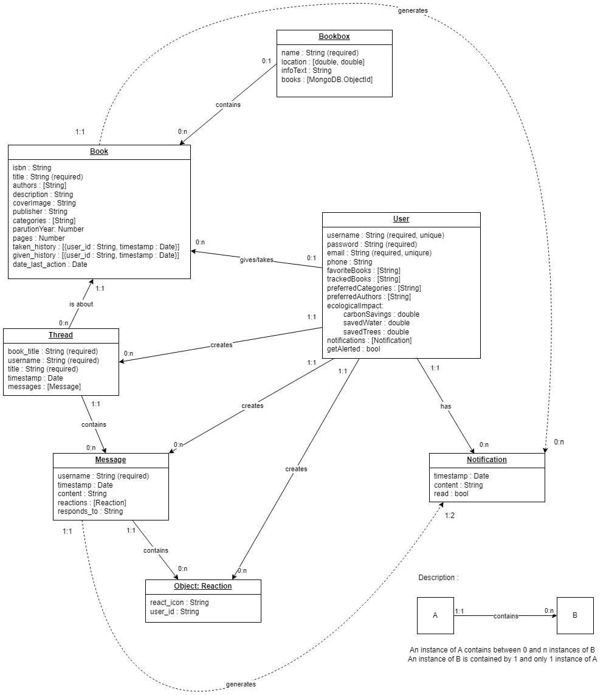

Description du projet
Lino est un projet visant à bonifier l'initiative des boîtes à livres et encadrer les activités littéraires de la communauté étudiante.Initié par le CLUM à l'automne 2023, le projet des boîtes à livres sert à promouvoir les échanges et partages au sein de la communauté étudiante. Installés dans plusieurs pavillons du campus, elles permettent à tous de trouver et se procurer des livres gratuitement et réduisent potentiellement le gaspillage en encourageant les étudiants à échanger leurs livres.
Cependant, l'infrastructure actuelle limite la portée de l'initiative...
Ce projet consiste à concevoir une application répondant aux objectifs suivants:
- Faciliter le repérage des boîtes à livre:L'application doit fournir une carte avec des mécanismes de recherche et tri facilitant le repérage des boîtes à livre.
- Assurer les échanges et la recherche de livre:L'application doit permettre aux étudiants de soumettre des requêtes et notifier le réseau lors de l'ajout d'un livre.
- Développer la structure du réseau:L'application doit permettre aux étudiants d'exprimer leurs préférences littéraires et simplifier leur mise en relation.
- Encadrer l'organisation d'activités littéraires:L'application doit faciliter l'organisation et la communication d'activités et d'évènements littéraires.
Exigences
Besoins fonctionnels
- Pouvoir configurer une alerte pour être notifié lorsque X livre est inséré / enlevé dans une boite à livres du campus
- Pouvoir connaitre les livres dans la boite à livres
- Pouvoir connaître les statistiques sur chaque livre (ratio de prêt par rapport au temps, nombre de prêts)
- Pouvoir générer/participer à un thread de discussion sur chaque livre emprunté qui disparaît lorsque aucune transaction n'a été faite sur le livre depuis au moins 60 jours
- Pouvoir inscrire un livre dans l'inventaire d'une boîte à livres en scannant/inscrivant son ISBN
Besoins non-fonctionnels
- La plateforme est disponible 24/7
- La plateforme est sécurisée
- Les données des boîtes à livres sont à jour et précises au moins 95% du temps
- L'application est facile d'utilisation pour tout public
- L'application n'est pas très dépendante en ressources pour les téléphones
Infrastructure
Design
Rapport d'avancement
Semaine 1 –
Ouverture de projet & Élaboration des exigences
Objectifs
- Prendre en main les outils qui seront utilisés pour le projet
- Produire une première version de l'échéancier
- Déterminer les exigences du projet
- Étudier le domaine, les notions et outils envisagés pour le projet
Réalisations
- Déterminer le public ciblé
- Dresser une liste non exhaustive des exigences
- Comprendre le domaine
- Choisir la technologie pour la base de données (MongoDB)
Notes
Discussions sur la portée du projet, voir quelques projets similaires , quelques fonctionnalitées, exigences ou technologies utilisées (NFC, airtags). Evocation d'aide de personnes extérieurs ( principalement pour aider à avoir un retour sur le design et le ressenti de l'application ) Discussions pour avoir un ordre d'idée des fondements principaux à avoir le plus tôt possible dans le projet ( avoir les sketchs papier, avoir les buts UI / UX et les exigences)
Semaine 2 –
Finalisation des exigences et public cible
Exigences
- recevoir une notification lorsque X livre est insere / enleve dans une boite a livre du campus
- Connaitre les livres dans la boite a livre
- Statistiques sur les livres (fréquence de transfert, categories les plus populaires, nombre de livre, analytiques en general)
- possibilte de feedback sur l application
- possibilte de feedback sur l application sur les livres
- bouton d action flottant avec des actions importantes ( acces a la camera, laisser une review )
- carte avec toutes les boites a livre du campus
Public cible et partis intéressés
- Personnel étudiant et de l université
- Mairie de Montreal
- Personne lambda (sans affiliation à l'université)
- Gérant de la boite à livres / personnel gérant bénévole
Notes
Discussions sur le "feel" de l'application : devrait être éphémère, passager comme les livres dans la boîte, les discussions et threads sur les livres sont supprimés après un certain temps d inactivité La palette de couleur sera basée sur les couleurs LINO Discussions sur les applications de la technologie NFC
Partage d'un crash course pour le développement de backend : The Odin Project
Semaine 3 –
Premières discussions sur le design et l'architecture
Design
Infrastructure
- Flutter
- MongoDBl
- NodeJS
- Typescript
- Fastify
Écologie
Encourrager l'utilisation de l'application en amenant edes statistiques sur les arbres sauvés (consommation de papier évitée en n'ayant pas acheté le livre)
Notes
Création du serveur MongoDB Notes incomplètes, discussions sur le design de l'interface, difficile à noter Important : pouvoir justifier le choix de chacune des technologies de l'infrastructure nommés précédement
Création et suppression d'une branche "Proto-Flutter" pour tester rapidement le prototype de l'API avec Flutter, et pour l'apprentissage
Suivi d'un tutoriel pour apprendre à utiliser Flutter : lien
Semaine 4 –
Première itération du design et backend
Notes sur l'API :
Le mot de passe sera hashé selon l'algorithme de la librairie Argon2
Le "savedTrees" est discuté car avec un arbre, on peut produire en moyenne 196 livre par arbre
( source ), ce n'est donc pas un indicateur pertinent
"Tracked books" sont les livres que l'utilisateur a demandé à la communauté ou marqué comme étant désiré, une notification apparaîtra sur son
appareil quand ce livre arrivera dans une boîte à livre
Fonctions implémentées (livres)
- getBookfromBookBox
- addExistingBook
- updateEcoImpact
- updateBooks
- getBooksFromISbn
- searchBooks
recupère livre d'une des bookBoxs en utilisant son id
Ajoute un livre en utilisat son id
ajoute au compte de l'utilisateur l'eau, les arbres et l'impact carbone sauvé par le livre qu'il a emprunté ou déposé, il ne peut pas utiliser deux fois le même livre
Met à jour les livres dans une BookBox
fetch un livre avec googleAPI et l'ISBN donné
filtre les livres selon plusieurs critères
Fonctions implémentées (threads)
- createThread
- addThreadMessage
- toggleMessageReaction
- searchThreads
- getBooksFromISbn
- searchBooks
Crée un thread avec un titre, un livre, username, etc.
Ajoute un message à un thread
find the thread, message, then add the reaction
Selon des critères,
fetch un livre avec googleAPI et l'ISBN donné
filtre les livres selon plusieurs critères
Fonctions implémentées (utilisateur)
- loginUser
- addToFavourites
- removeFromFavourites
- getFavourites
- getEcologicalImpacct
- getUserName
vérifie si l'utilisateur entré correspond au mot de passe et donne log in l'uitlisateur via un token
ajoute un livre aux favoris de l'utilisateur
enlève un livre des favoris de l'utilisateur
Renvoie les favoris
renvoie l'impact écologique
ernvoie le nom d'utilisateur par l'id d'utilisateur
Première itération du design
Notes
Refresh tokens
Ne pas oublier la technologie NFC
Ajouter des recommendations quand l'on emprunte un livre ou quand l'on en recherche un
Ajouter un feedback après le fetch des informations du livres avec google lens
Semaine 5 –
Retours sur le design
Dernière itération du design
Retours sur le design
- burger menu pas nécessaire, il faut repenser la disposition des éléments
- La couleur jaunâtre des pages de paramètres est à revoir
- ajouter des catégories de tri : genre, catégorie
- Ajouter les pop ups pour la sélection de livre
- revoir les threads
- condenser le menu
Développement de tests unitaires dans l'API
Pour faciliter et accélerer le développement, les tests unitaires ont été implémentés en priorité
Architecture de l'application
Notes
Abandon de l'idée des refresh tokens Beaucoup de discussions sur le design et un peu sur la portée du projet
Semaine 6 –
Début de l'implémentation, planification en détail de l'infrastructure
Version finale du diagramme de données
Lien vers le diagramme ici
Schéma du Diagramme API
Premier dessin du Diagramme des interactions entre APIs
À faire au courrant de la semaine
- requirements généraux de l'application
- Diagramme API
- Compléter le diagramme de modèle de données
- Détailler les requirements propres à chaque page de l'app ( front end majoritairement )
Semaine 7 –
Assignation des issues et retour sur du travail déjà fait
Diagramme API

Version non finale, sera aggrémentée au fil du développement
À faire au courrant de la semaine
- Faire les issues assignées pour chacun, voir ce lien pour la progression en temps réel des tâches
- Documenter les changements
Notes
Discussions sur la valeur et l'utilité des réactions (à la manière des upvotes Reddit) et si un utilisateur peut mettre une seule ou plusieurs réactions mention de faker, un package python qui genere des certaines donnees de maniere random mention de postman, service pour tester les APIs
Semaine 8 –
Retour sur le travail
Updates travail
- Refractor APIs, séparation du nommage des routes et des l'utilisation des fonctions
- readme dans backend/src pour keep track of
- dummy app
À faire au courrant de la semaine
- Documentation du code actuel
- version sans polish de l'application
Notes
Utilisation des NFCs et questions sur le fonctionnement vis à vis du hardware et de IOS vs Android